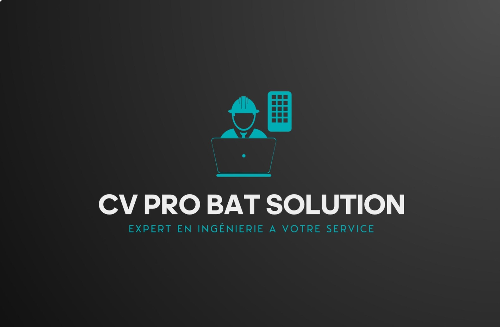

Ingénierie bâtiment
Analyse technique, faisabilité, définition des solutions constructives et aide à la décision pour vos projets de construction, rénovation ou transformation.

Vivien CazauxExpert en ingénierie à votre service
Expert en maîtrise d'oeuvre générale et travaux, expert indépendant pour vos sinistres et dossiers techniques d'appel d'offres.
Fort de 19 ans d'expérience dans la maîtrise d'oeuvre travaux et la maîtrise d'oeuvre générale, CV PRO BAT SOLUTION accompagne particuliers, professionnels et maîtres d'ouvrage avec une approche claire, rigoureuse et orientée terrain.
J'interviens également comme expert indépendant en pathologies et sinistres du bâtiment tous corps d'état, et je réalise vos dossiers techniques d'appels d'offres afin de valoriser votre candidature et mettre toutes les chances de votre côté.
J'accompagne aussi les entreprises et maîtres d'ouvrage dans l'adoption de l'IA et la création d'outils logiciels sur mesure pour simplifier, automatiser et mieux piloter leur activité.
Une expertise structurée
Chaque mission est traitée avec une lecture complète du bâti, des contraintes réglementaires, des choix techniques et des objectifs du client. L'objectif: livrer des recommandations exploitables, des documents précis et un suivi de projet maîtrisé.
Prestations
Analyse technique, faisabilité, définition des solutions constructives et aide à la décision pour vos projets de construction, rénovation ou transformation.
Organisation, consultation des entreprises, coordination, suivi d'exécution et contrôle de la conformité jusqu'à la réception des travaux.
Avis technique neutre sur les désordres, pathologies, malfaçons, sinistres ou litiges bâtiment, avec une lecture tous corps d'état.
Accompagnement des entreprises dans la réponse et la réussite des appels d'offres: mémoire technique, mémoire RSE, mémoire décarbonation et pièces techniques de candidature.
Méthode
CV PRO BAT SOLUTION intervient avec une logique de précision: comprendre le besoin, vérifier le contexte, produire les bons documents et accompagner les décisions jusqu'au terrain.
Échange initial, analyse des objectifs, des contraintes et des documents disponibles.
Visite, relevé, vérification des points sensibles et orientation des solutions adaptées.
Rédaction de pièces techniques, rapports, estimations ou supports de consultation.
Appui à la décision, coordination des intervenants et accompagnement durant les travaux.
Spécialisation
CV PRO BAT SOLUTION accompagne les entreprises dans la préparation de leurs réponses aux appels d'offres, avec des dossiers techniques clairs, structurés et adaptés aux attentes du maître d'ouvrage.
Innovation BTP
CV PRO BAT SOLUTION accompagne les entreprises du BTP et les maîtres d'ouvrage dans l'intégration d'outils d'intelligence artificielle et le développement de logiciels personnalisés pour gagner du temps, fiabiliser les suivis et simplifier le quotidien des équipes terrain, des bureaux et des décideurs.
Transformez vos méthodes de travail en solutions simples, utiles et adaptées à votre activité: moins de tâches répétitives, plus de réactivité, plus de maîtrise sur vos projets.
Parler d'un outil sur mesureAnalyse de documents, aide à la rédaction, tri d'informations et préparation de réponses techniques.
Tableaux de suivi, applications internes, formulaires chantier et centralisation des données métiers.
Des outils pensés pour les usages réels: chantier, devis, consultation, suivi, reporting et qualité.
Domaines d'intervention
Rénovation, extension, désordres, suivi de chantier et assistance technique.
Aménagement, conformité, transformation d'espaces et coordination travaux.
Analyse de pathologies, dossiers de travaux, consultation et suivi des entreprises.
Contact
Expliquez votre besoin, joignez les premiers éléments disponibles et recevez un retour clair sur la marche à suivre.